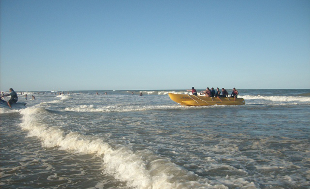
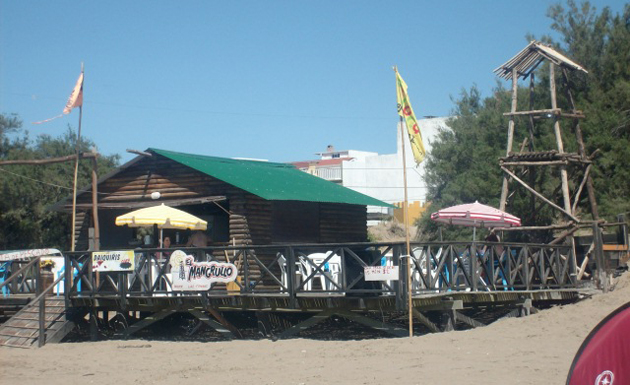
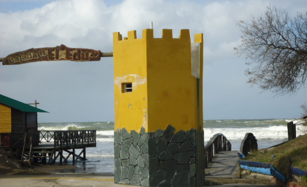
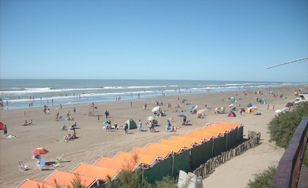

- 
- 
- 
- 
Tel: (011) 4621.1253 | lastoninasbeach@gmail.com
Alquiler de caballos, de cuatriciclos, y de carros playeros...
Nos encontramos a 15 Km de SAN CLEMENTE DEL TUYU, en donde se encuentran las únicas termas marinas de la costa y el parque temático MUNDO MARINO, y hacia el sur, también muy cerca esta Santa Teresita, con su muelle para pesca, bingo y casino y todas las bondades de esta gran ciudad turística...
......Pero en "Las Toninas" conservamos esa .......tranquilidad familiera que enamora
.......a cada veraneante que la descubre.
"Las Toninas" cuenta con un anfiteatro central, donde se celebra el cumpleaños de la ciudad todos los 20 de febrero, con espectáculos gratuitos, una feria artesanal y comidas regionales
En "Las Toninas" se celebran los carnavales con los distintos artistas y comparsas alusivas a la fecha.
En "Las Toninas" encontrás el único laberinto natural de la costa, un lugar distinto para disfrutar en familia.
Se encuentra entre las calles 16 a 14 y de 7 a 9, y está abierto de 9 a 20. Durante la temporada se realizan juegos ('la caza del fantasma') y durante semana santa se representa el 'via crucis'.
jfp2605@outlook.com
Cel.:(011) 15.5690.9484 | 15.5487.2145
El complejo 1 esta ubicado en calle 5
(Nº 1568) entre 34 y 36
El complejo 2 esta ubicado en calle 5
(Nº 1547) entre 34 y 36
El complejo 3 esta ubicado en calle 48
(Nº 457) entre 7 y 9
El complejo 4 esta ubicado en calle 36
(Nº 429) entre 7 y 9
El departamento esta ubicado en calle 1
(Nº 990) entre 24 y 22